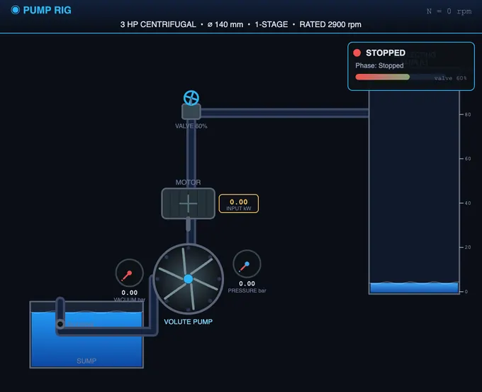
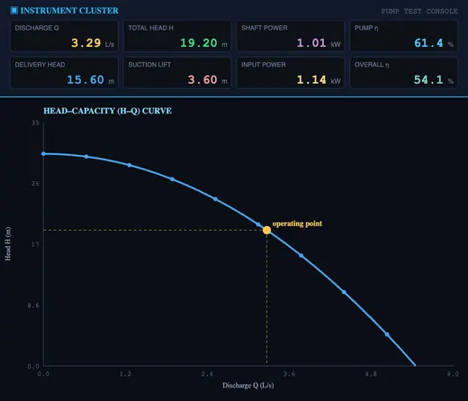
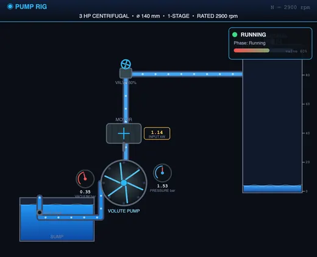

Centrifugal Pump Test Rig Simulator
Plot head-capacity, power & efficiency curves — find the BEP, apply affinity laws, match a system curve and check NPSH on six pump presets
📖 User Guide — Centrifugal Pump Test Rig
1 Overview
This virtual centrifugal pump test rig reproduces a complete hydraulics-lab pump bench — a sump, a volute pump with impeller, suction and delivery pipes, vacuum and pressure gauges, a motor with an energy meter, a gate (delivery) valve and a calibrated collecting tank. By throttling the delivery valve you trace the pump's characteristic curves: head-capacity (H–Q), shaft power, and efficiency, and you can locate the best efficiency point (BEP). Six pump presets are provided and the impeller diameter, number of stages, rated speed and suction lift are fully adjustable, so every result is computed from first principles.
Six automated test procedures are bundled (Constant-Speed Characteristic, Combined Characteristic, Variable-Speed / Affinity, Multi-Speed Family, System Curve & Duty Point, and NPSH / Cavitation). Results are shown in seven chart views, a one-click professional PDF report documents each run, and an SI / US-unit toggle converts head (m ↔ ft), discharge (L/s ↔ gpm), power (kW ↔ hp) and pressure throughout. Four modes — Simulate, Explore, Practice and Quiz — cover hands-on use, theory, numerical practice and self-testing.
2 Getting Started — Run Your First Test
- Pick a pump from the six preset chips (e.g. "3 HP").
- (Optional) Open ⚙ Pump Setup to change the impeller diameter, number of stages, rated speed and static suction lift.
- Set the speed N and the delivery-valve opening with the two sliders. Closing the valve raises the head and reduces the discharge (moving up the H–Q curve toward shut-off); opening it does the reverse.
- Click ▶ Prime & Start — the pump primes, the impeller spins and the gauges and live readouts come alive.
- Click 🧪 Run Test, choose a procedure (Constant-Speed, Affinity, System Curve, NPSH…), and press Run Test on its card.
- Watch the rig run the whole procedure on its own — stepping the valve, reading head, discharge and power — with a live progress banner.
- When it finishes, the results fill the relevant chart and the result cards. Click 📑 Report (PDF) for a printable report, or CSV / PNG for raw data and images.
The control-panel buttons are: Prime & Start · Run Test · Reset · Pump Setup, followed by the export group (Show Calculations, Report, CSV, PNG). Report stays disabled until a test has completed.
3 The Test Rig — Live Instrumentation
The left canvas is the pump test bed: a sump tank feeds a suction pipe (with a foot valve and strainer) into the eye of the impeller; the volute casing discharges up a delivery pipe through a gate valve to a calibrated collecting tank. A vacuum gauge on the suction side and a pressure gauge on the delivery side give the heads; the motor carries an energy meter / wattmeter for input power and a tachometer for speed. The impeller and water animate with the operating point, and the collecting-tank level rises with discharge. A status panel shows the run state and the valve position.
The right canvas is the instrument cluster and the characteristic charts. The digital readouts show suction and delivery gauge readings, discharge, speed, input power, total head and efficiency. The seven chart tabs are: H–Q (head-capacity), Power, Efficiency (with BEP marked), Combined (all three on one plot), System (pump curve vs system curve and the duty point), Affinity (H–Q family at several speeds), and NPSH (available vs required).
4 Run Test — Standard Procedures
The 🧪 Run Test button opens the procedure picker. Six procedures are bundled:
- Constant-Speed Characteristic Test (IS 9137 / ISO 9906) — at rated speed, throttles the delivery valve from shut-off to full flow, recording H, Q and power to build the H–Q, power and efficiency curves and locate the BEP.
- Combined Characteristic Test — the same sweep presented as the classic combined chart with H, P and η against Q on one set of axes.
- Variable-Speed (Affinity) Test — at a fixed valve opening, varies the speed and demonstrates Q ∝ N, H ∝ N², P ∝ N³.
- Multi-Speed Family — runs the constant-speed sweep at several speeds and overlays the H–Q curves to show how the whole characteristic scales by the affinity laws.
- System Curve & Duty Point — builds the system resistance curve (static lift + friction ∝ Q²) and finds the operating point where it meets the pump curve.
- NPSH / Cavitation Test — increases the discharge, plots NPSH available against NPSH required, and flags the onset of cavitation when the margin is lost.
A progress banner shows the procedure, the current step, the live valve/speed setting and a countdown; a × CANCEL button aborts cleanly. Results route to the right chart automatically.
5 Chart Views
Use the Chart View tabs to switch how results are displayed:
- H–Q — the head-capacity curve: head falls as discharge rises, from the shut-off head at Q = 0.
- Power — shaft power vs discharge, rising from the shut-off power.
- Efficiency — efficiency vs discharge, peaking at the best efficiency point (BEP), which is marked.
- Combined — H, P and η on one plot, the standard textbook combined characteristic.
- System — the pump curve and the system curve H = Hₛₜₐₜₛₓ + kQ², with the duty point at their intersection.
- Affinity — the H–Q family at several speeds, illustrating the affinity laws.
- NPSH — NPSH available vs NPSH required against discharge, with the cavitation-onset point marked.
6 Key Concepts & Formulas
Total head: H = (pₒ − pₛ)/ρg + (vₒ² − vₛ²)/2g + z. In the rig this is the delivery-gauge reading plus the suction lift plus the gauge datum plus the velocity-head difference.
Water (output) power: Pₒ = ρ·g·Q·H. Pump efficiency: ηₙ = Pₒ / Pₛₕₐ₌ₜ ; overall efficiency: ηₒ = Pₒ / Pₘₙₙₙₜ = ηₙ × ηₛₒₜₒₙ.
Affinity laws: Q ∝ N, H ∝ N², P ∝ N³ (fixed impeller). Specific speed: Nₛ = N√Q / H⁹⃗⁷⁵ at the BEP. NPSH available: NPSHₐ = (pₐₜₘ − pₙ)/ρg − hₛₐₒₜ − h₌.
Worked example: a pump delivers Q = 5 L/s against H = 24 m. Water power Pₒ = 1000 × 9.81 × 0.005 × 24 = 1.18 kW. If the shaft power is 1.85 kW, the pump efficiency is 1.18 / 1.85 = 63.7 %.
7 SI vs US Units
Click the SI / US toggle. In SI: head in metres (m), discharge in litres per second (L/s), power in kilowatts (kW), pressure in bar. In US units: head in feet (ft), discharge in US gallons per minute (gpm), power in horsepower (hp), pressure in psi. All readouts, slider labels, badges, result cards, charts, the PDF report and the CSV export update instantly; internal calculations are always carried out in SI.
8 Explore, Practice & Quiz
Explore mode has six categories — Basics, Procedure, Formulas, Characteristics, Affinity & Scaling and Cavitation & NPSH — each with concept cards, formulas and worked examples rendered in proper mathematical notation.
Practice mode generates random numerical problems — compute water power, efficiency, specific speed, affinity scaling or NPSH. Type your answer, click Check, and use Show Solution for a step-by-step walkthrough. Your running score is tracked.
Quiz mode asks five multiple-choice questions on pump characteristics, efficiency, affinity laws and cavitation, with a star rating at the end.
9 Tips & Best Practices
- Always Prime & Start before pressing Run Test — the procedure picker prompts you if the pump is off.
- Run the Constant-Speed test first to see the full H–Q, power and efficiency curves and the BEP, then explore Affinity and System Curve.
- Operate near the BEP — running far from it wastes energy and increases vibration and wear.
- Watch the NPSH chart: raising the suction lift in Pump Setup pushes the available NPSH down toward the required curve and triggers cavitation.
- Right-click the rig canvas for quick actions (save image, copy reading, reset).
Centrifugal Pump Test Rig — Characteristic Curves, Efficiency & the Best Efficiency Point

This virtual centrifugal pump test rig reproduces the standard hydraulics-laboratory experiment used to characterise a rotodynamic pump. By throttling the delivery valve at constant speed you trace the pump's characteristic curves — head-capacity (H–Q), shaft power and efficiency — locate the best efficiency point (BEP), apply the affinity laws for variable speed, match a system curve to find the duty point, and check NPSH against cavitation. Every reading and curve is computed from first principles, in line with IS 9137 and ISO 9906 acceptance-test practice.
When I first ran a real pump test, what surprised me was how flat the efficiency curve is on either side of the BEP. The textbook curve looks like a sharp peak; the actual measurement is closer to a gentle dome — useful, because it means you don't lose much by running a little off-design, but also a trap, because that flatness hides the start of cavitation and recirculation losses.
The Head-Capacity (H–Q) Curve
At a fixed speed, the total head a centrifugal pump develops falls as the discharge increases. The curve starts at the shut-off head (valve closed, Q = 0) and droops toward the maximum (free-delivery) flow. The total head is found from the suction and delivery gauges as H = (pₒ − pₛ)/ρg plus the gauge datum and the velocity-head difference. The shape of the H–Q curve — steep or flat — determines how the pump shares load and how stable it is on its system.

Power, Efficiency and the Best Efficiency Point
The water (output) power delivered to the fluid is Pₒ = ρgQH; it is zero at shut-off and at free delivery and peaks in between. The shaft power drawn from the motor rises steadily with discharge from a finite shut-off value. The efficiency — water power divided by shaft power — rises to a maximum at the best efficiency point and falls away on either side. Running a pump close to its BEP minimises energy cost, vibration and wear; the lab test exists precisely to find that point and the corresponding head and flow.
Affinity Laws, System Curves and Specific Speed
The affinity laws scale performance with speed for a fixed impeller: discharge varies as N, head as N² and power as N³. They let a single measured curve be re-drawn for any speed. The system curve, H = Hₛₜₐₜₛₓ + kQ², represents the static lift plus pipe friction; its intersection with the pump curve is the duty (operating) point. The dimensionless specific speed Nₛ = N√Q/H⁹⃗⁷⁵, evaluated at the BEP, classifies the impeller as radial, mixed or axial flow and lets pumps of different sizes be compared.

NPSH and Cavitation
If the pressure at the impeller eye falls to the liquid's vapour pressure, the liquid boils and cavitation begins — collapsing vapour bubbles erode the impeller and the head and efficiency drop sharply. The available margin is the net positive suction head, NPSHₐ = (pₐₜₘ − pₙ)/ρg − suction lift − suction friction. It must stay above the pump's required NPSH, which rises roughly with the square of discharge. Raising the suction lift or the flow lowers the margin — the NPSH chart shows exactly when cavitation sets in.
Who Uses This Simulator?
Mechanical, civil and chemical engineering students use this rig in fluid machinery, hydraulics and turbomachinery labs; diploma and vocational students use it to learn pump performance testing without a physical bench; and instructors use it to demonstrate the BEP, affinity laws and cavitation safely and repeatably. It is built for BTech, polytechnic and AMIE fluid-machinery courses.
Explore Related Simulators
Continue exploring fluid machinery and lab-testing tools on NHIT VisualLab. Compare the pump bench with the Hydraulic Turbine Test Rig (a pump is essentially a turbine run in reverse), the IC Engine & Morse Test Rig for performance-curve and efficiency testing of a prime mover, study the Centrifugal Governor for speed control of rotating machines, see flow-regime transition in the Reynolds Number simulator, and apply the Continuity Equation to relate pipe velocity and discharge.